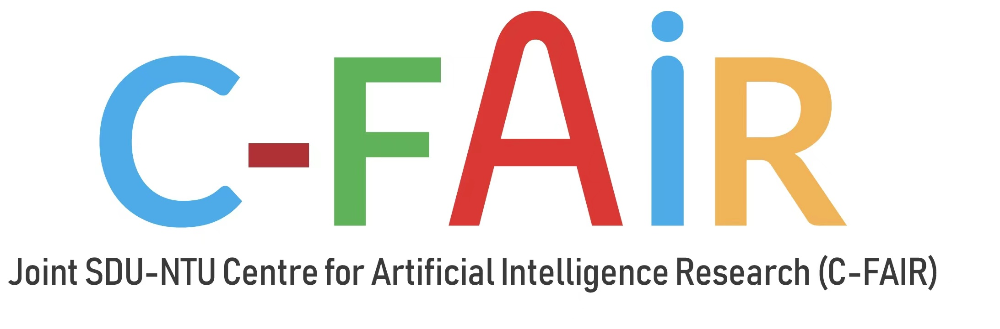

IJCAI 2023
The 3rd AI for Ageless Aging Workshop (AIAA)
9:00 AM - 12:30 PM, August 21, 2023 (GMT+8) | Macao, China
About IJCAI
The International Joint Conference on Artificial Intelligence (IJCAI) is the leading conference in the field of Artificial Intelligence. It covers a broad range of research areas in the field of AI. The conference series has been organized by the nonprofit IJCAI Organization since 1969, making it the oldest premier AI conference series which gathers researchers of AI all around the world.
Introduction
Due to the good response of the successful “AI for Cognitive and Physical Frailty Workshop (AIF)” jointly organized with IJCAI (International Joint Conference on Artificial Intelligence), we decided to expand the title to the broader “AI for Ageless Aging Workshop”. The number of people in the world aged 65 or over will more than double to reach 1.5 billion by 2050, according to the United Nations. The rapid aging of the global population has brought unprecedented economic and cultural challenges to individuals, families, society, as well as the international community. To alleviate the challenges of an aging society, the elderly population requires support in active lifestyles, balanced nutrition, and healthcare services. Furthermore, healthy and thriving elderly can contribute significantly to society.
As a seismic force shaping the 21st century, artificial intelligence (AI) algorithms in the field of aging research have made great progress and offer exciting future opportunities. Many aspects of aging have been impacted by innovative hardware, software, and sensor applications and emerging algorithms in the field of AI, including healthcare services, disease management and prediction, and longevity medicine development. Interdisciplinary research and the application of AI technologies in the field of frailty can help assess the potential risk of frailty and pre-frailty in home and community environments instead of relying on clinical settings alone. AI technologies can also offer potential solutions to improve efforts at the identification and intervention of age-related diseases, such as strokes, Alzheimer’s Disease, dementia, Parkinson’s Disease, etc. By employing AI technologies, intervention plans, such as for physical exercise, nutrition, and polypharmacy management, can be customized, adaptable, and personalized, maximizing the effectiveness of the intervention. In addition, AI-based biomarkers of aging can present a holistic view of biological processes, pinpoint the most critical features, and identify biological targets and mechanisms based on causal models. Nonetheless, opportunities offered by these emerging technologies raise ethical concerns that must be addressed in order to ensure that these automated systems can truly benefit older adults.
The new era of ageless aging is data-driven and AI-enabled. This timely workshop on “AI for Ageless Aging” aims to bring together researchers, medical practitioners, representatives of various beneficiaries, relevant industry stakeholders, potential investors, and others to discuss how AI technologies can be used to enable older people to lead active, independent, and dignified lifestyles.
Invited Talks
TBD |
TBD |
TBD |
Schedule
| Time (GMT+8) | Speaker | Title | Record |
|---|---|---|---|
| 9:00 AM - 9:05 AM | TBD | Opening Remarks | |
| 9:05 AM - 9:40 AM | TBD | TBD | |
| 9:40 AM - 9:55 AM | TBD | TBD | |
| 9:55 AM - 10:10 AM | TBD | TBD | |
| 10:10 AM - 10:45 AM | TBD | TBD | |
| 10:45 AM - 11:15 AM | - | - | |
| 11:15 AM - 11:30 AM | TBD | TBD | |
| 11:30 AM - 11:45 AM | TBD | TBD | |
| 11:45 AM - 12:00 PM | TBD | TBD | |
| 12:00 PM - 12:35 PM | TBD | TBD | |
| 12:35 PM - 12:40 PM | TBD | Closing | |
Committee
Organized By
 |
|  |